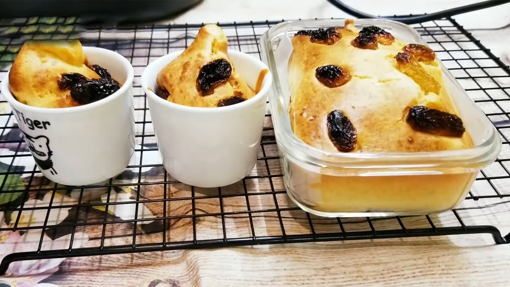

Apple Cake

Description
Crowd-pleasing banana pancakes made from scratch that are ready in minutes. A fun twist on ordinary pancakes.
Wake up on the right side of the bed with a stack of sweet, cozy, and simple banana pancakes. This top-rated banana pancake recipe is easy to make and it comes together in just 15 minutes, so you don't have to wake up early to enjoy a satisfying breakfast. Learn how to make, store, and serve the best banana pancakes ever.
Ingredient
-
Flour
-
Sugar
-
An Egg
-
Bananas
Steps
-
Gather ingredients.
-
Combine flour, white sugar, baking powder, and salt in a bowl. Mix together egg, milk, vegetable oil, and bananas in a second bowl. Stir flour mixture into banana mixture; batter will be slightly lumpy.
-
Heat a lightly oiled griddle or frying pan over medium high heat. Pour or scoop the batter onto the griddle, using approximately 1/4 cup for each pancake.
-
Cook until pancakes are golden brown, 3 to 5 minutes per side. Serve hot.
-
Serve hot and enjoy!